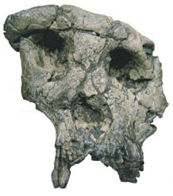
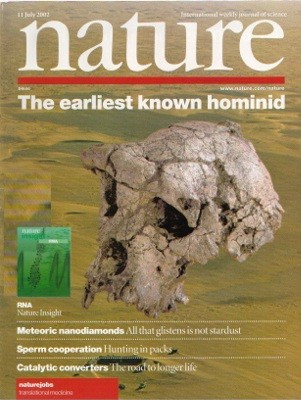

| Evolution in the News - October 2002 |
| by Do-While Jones |
Sahelanthropus tchadensis (Chad man) gets rejected in record time.
It all started with a report in Nature which began by saying,
|
Since 2001 [specifically, July 2001 through February 2002], the Mission Paléoanthropologique Franco-Tchadienne (MPFT), a scientific collaboration between Poitiers University, Ndjamena University and Centre National d'Appui à la Recherche (CNAR) (Ndjaména), has recovered hominid specimens, including a nearly complete cranium, from a single locality (TM 266) in the Toros-Menalla fossiliferous area of the Djurab Desert of northern Chad." 1 |
|
 |
The biggest piece they found was this broken, distorted skull (cranium). They also found two lower jaw fragments, and three teeth. Because they refer to this as "six hominid specimens" 2, someone unfamiliar with standard scientific jargon might think that six complete skeletons have been found. What it really means is that six fossil fragments have been found, which they assume belong together. In a remarkably short time, the discovery was published in the July 11, 2002, issue of Nature. A photo of the skull, taken from a view that conceals the distortion, was placed on the cover. The editors of Nature said, |
Wow! The missing link has at last been found! Also in that same issue, it was said,
|
 |
The two articles describing the find written by the discoverers were much more modest. These articles totaled 11 pages, mostly consisting of measurements and comparisons of measurements.
Science News summarized the Nature publication by saying,
|
The nearly complete skull, two lower-jaw fragments, and three isolated teeth attributed to this previously unknown hominid hold a pair of major surprises. First, a small braincase like that of living chimpanzees connects to a face and teeth resembling those of bigger-brained hominids dating to 1.75 million years ago, perhaps even early Homo specimens. No one had predicted that elements of later skulls--in particular, a short, relatively flat face, pronounced brow ridge, and small canine teeth--coexisted with a chimp-sized brain in early hominids. Second, Brunet and his colleagues made their discovery in Chad, a central African nation located far from established fossil-hominid sites in eastern and southern Africa. It appears that between 7 million and 5 million years ago, hominids evolved into a wider variety of lineages across a broader area than scientists had assumed, says anthropologist Bernard Wood of George Washington University in Washington, D. C. 5 |
In short, the fossils don't look like expected, weren't found where expected, and were older than expected. So, on the basis of parts of one broken skull, some evolutionists were ready to make radical revisions to the human evolutionary tree. If so little evidence can upset their previous explanation, how strong could the evidence for that previous explanation have been?
The fossil discoverers said,
|
The associated fauna suggest that the fossils are between 6 and 7 million years old. 6 [The rock layers where the fossils were found are] dated biochronolically--that is by the evolutive degree of their fauna. 7 |
Science News puts this in somewhat plainer English by saying,
|
The estimated age rests on a comparison of the Chad finds with animal species at other African sites with established ages. 8 |
In other words, they dated the rocks where the skull was found by the "established" age of other fossils. They know the age of those fossils by their "evolutive degree." So, "knowing" how rapidly species evolve, they determined the age of the rocks. How do they know how rapidly species evolve? They compared fossils from different rock layers (of known age), to see how much they have changed over time. And how do they know the ages of those rocks? From the fossils they contain, of course. Does it seem to you as if they are going around in logical circles? That's because they are.
Chad man raced through the first three life cycle stages with amazing speed. The fragmentary fossils (1) led to imaginative interpretations (2), which led to popular publication (3). You just read what Science News had to say about Chad Man. U.S. News and World Report was quick to jump on the band wagon, too.
|
When scientists introduced the world to humankind's earliest known ancestor two weeks ago, they showed us more than a mere museum piece. Peering at the 7 million-year-old skull is almost like seeing a reflection of our earlier selves. And yet that fossil represents only a recent chapter in a grander story, beginning with the first single-celled life that arose and began evolving some 3.8 billion years ago. Now, as the science of evolution moves beyond guesswork, we are learning something even more remarkable: how that tale unfolded. 9 |
|
Sahelanthropus tchadensis is an enigmatic new Miocene species, whose characteristics are a mix of those of apes and Homo erectus and which has been proclaimed by Brunet et al. to be the earliest hominid. However, we believe that features of the dentition, face and cranial base that are said to define unique links between this Toumaï specimen and the hominid clade are either not diagnostic or are consequences of biomechanical adaptations. To represent a valid clade, hominids must share unique defining features, and Sahelanthropus does not appear to have been an obligate biped. 10 |
In simple English, they said that the teeth and facial features were claimed to be evidence that this skull came from a creature that was intermediate between apes and humans. But, they said, these features are neither proof of that link, nor are they necessarily the result of evolution. Furthermore, they said, human ancestors had to walk upright on two feet, and it does not appear that Chad Man did.
Following this introduction, they gave four technical reasons why Chad Man could not have been a human ancestor. These arguments have to do with the size of the teeth, the shape of the bones around the eyes, the thickness of the enamel on the teeth, and an extremely technical argument about "an anterior position to the foramen magnum on the basis of its front edge meeting the bicarotid and biporion chords". Pardon us if we don't comment on that last one.
Finally, they conclude,
|
We believe that Sahelanthropus was an ape living in an environment that was later inhabited by australopithecines and, like them, it adapted with a powerful masticatory complex. A penecontemporary primate with a perfect and well-developed postcranial adaptation to obligate bipedalism is more likely to have been an early hominid. 11 |
In other words, it was just an ape with a similarly "adapted" mouth. According to them, it evolved a jaw with teeth similar to the real (undiscovered) human ancestor because it lived in an area similar to where the human ancestor would eventually evolve, so it had the same diet, and therefore its mouth must have adapted similarly. Another kind of ape, which habitually walked upright, is more likely to have been the (still) missing link.
Sometimes national pride is more important than scientific objectivity when it comes to accepting or rejecting the interpretations of fossil discoveries. Since Chad Man was discovered by a French team, we would expect British and American experts to dismiss it. But look at who wrote this rejection of Chad Man:
Two of them are French! This isn't just sour grapes from two guys in Michigan.
Chad Man is just the latest in a long line of fossils that evolutionists hoped would be the missing link, but turned out to be just another extinct ape.
| Quick links to | |
|---|---|
| Science Against Evolution Home Page |
Back issues of Disclosure (our newsletter) |
| Web Site of the Month |
Topical Index |
Footnotes:
1
Brunet, et al., Nature, Vol. 418, 11 July 2002, "A new hominid from the Upper Miocene of Chad, Central Africa" Page 145 https://www.nature.com/articles/nature00879
(Ev)
2
ibid.
3
ibid. page xiii.
4
Bernard Wood, Nature, Vol. 418, 11 July 2002, "Hominid revelations from Chad" pages 133-134 https://www.nature.com/articles/418133a
(Ev)
5
Science News, July 13, 2002, "Evolution's Surprise (Fossil find uproots our early ancestors)", page 19
(Ev)
6
Brunet, et al., Nature, Vol. 418, 11 July 2002, "A new hominid from the Upper Miocene of Chad, Central Africa" Page 145 https://www.nature.com/articles/nature00879
(Ev)
7
ibid. page 152.
8
Science News, July 13, 2002, "Evolution's Surprise (Fossil find uproots our early ancestors)", page 19
(Ev)
9
Hayden, U.S. News and World Report, July 29, 2002, "A theory evolves", page 43
(Ev+)
10
Nature, Vol. 419, 10 October, 2002, "Palaeoanthropology (communication arising): Sahelanthropus or 'Sahelpithecus'?", pages 581 - 582 https://www.nature.com/articles/419581a and https://www.nature.com/articles/419582a
(Ev)
11
ibid.